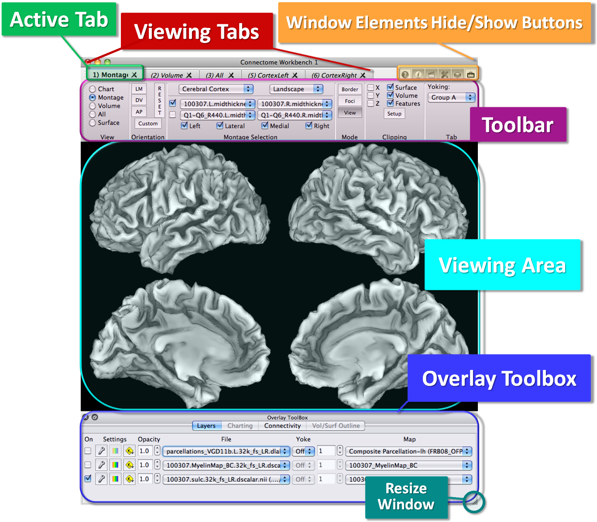

Viewing Area
Viewing Area is the field of the Workbench Window
where images of the surface, volume or whole brain are displayed,
or in Chart
View, where chart data is
displayed.
- The image or chart displayed is set for
each Viewing
Tab, unless Tile Tabs view is on (see View Menu),
which displays images/charts for all tabs within a single
viewing area.
- The default placement of the surface or
volume is in the center of the viewing area and, in Surface
View, rotation is about the center of
gravity of the surface.
- Use the Reset button in the Toolbar
to return to the default zoom, pan, and orientation.
- The default background is set to black,
but this can be changed to any color in the Preferences:
Color tab.
- Click on the tab names or press
Command/Ctrl + left and right arrow buttons to switch the
Toolbar and Overlay Toolbox to control each tab's display
options. A box will appear briefly around the Active Tab
"tile" in the viewing area.
- Mouse controls operate independently
for each "tile", unless Viewing tabs are yoked (see Tab
Functions).
